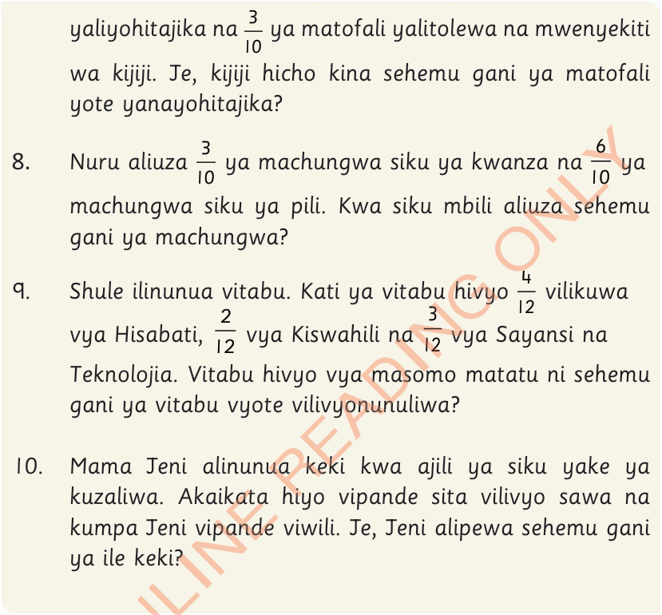
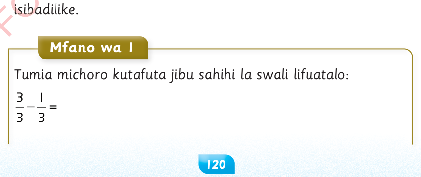

yaliyohitajika na ya matofali yalitolewa na mwenyekiti wa kijiji. Je, kijiji hicho kina sehemu gani ya matofali yote yanayohitajika?
8.
Nuru aliuza ya machungwa siku ya kwanza na ya machungwa siku ya pili. Kwa siku mbili aliuza sehemu gani ya machungwa?
9.
Shule ilinunua vitabu. Kati ya vitabu hivyo vilikuwa vya Hisabati, vya Kiswahili na vya Sayansi na Teknolojia. Vitabu hivyo vya masomo matatu ni sehemu gani ya vitabu vyote vilivyonunuliwa?
10.
Mama Jeni alinunua keki kwa ajili ya siku yake ya kuzaliwa. Akaikata hiyo vipande sita vilivyo sawa na kumpa Jeni vipande viwili. Je, Jeni alipewa sehemu gani ya ile keki?
Kutoa sehemu zenye asili moja
Ili kuweza kutoa sehemu zenye asili moja, toa kiasi tu na asili isibadilike.
Mfano wa 1

Tumia michoro kutafuta jibu sahihi la swali lifuatalo: